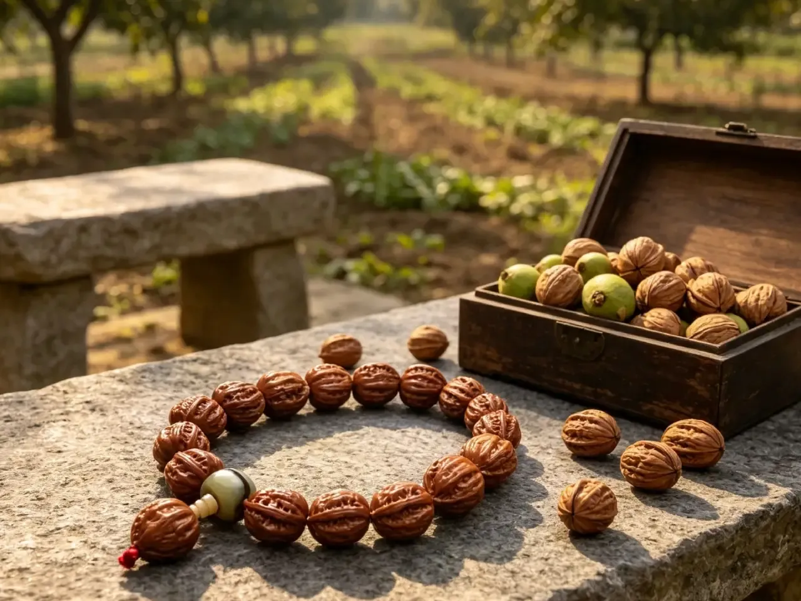
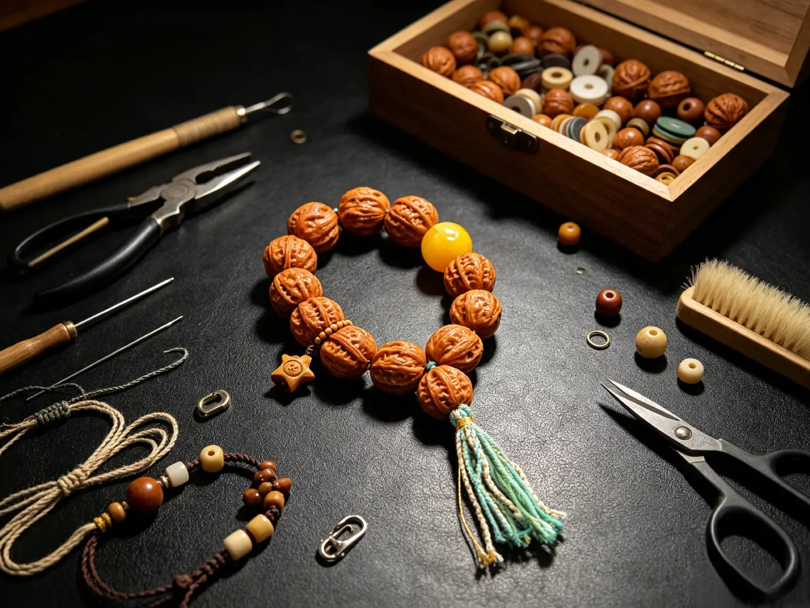
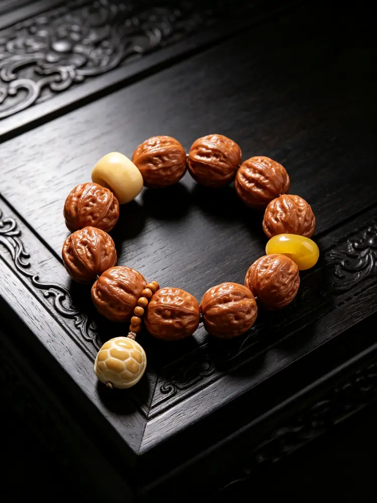

In the world of Chinese traditional accessories, many people first encounter exotic Bodhi seed bracelets from other cultures. Few realize that the Qiuzi walnut bracelet is a truly native Chinese treasure — a Taoist meditation bead tradition rooted in this land for over a thousand years, without any foreign cultural influence. Made entirely from wild walnuts found deep in the northern mountains of China, the ancients gathered these natural nuts and polished them into bracelets, infusing them with philosophy, wisdom, and auspicious wishes. Their understated, introspective Eastern character is especially beloved by overseas enthusiasts of Chinese culture.

Long before Buddhist prayer beads arrived in China, Taoist practitioners already had the tradition of "flowing beads" (Liuzhu), as recorded in the Taoist canon Taixuan Jin Suo Liu Zhu Yin. Ancient Taoist hermits and scholars living in the mountains didn't need to travel to distant lands for exotic seeds — they simply gathered naturally ripened Qiuzi walnuts from the forests around them, cleaned and polished them into bracelets, and used them for daily meditation and quiet contemplation.
Born in the mountains, enduring the changing seasons, sun, wind, and rain, these walnuts carry the natural energy of the wild. The ancients believed that keeping objects from nature close to the body was a way to live in harmony with the seasons and nature itself — the most simple expression of the Eastern philosophy of "unity between heaven and humanity."
1. Ridges and Valleys: Embracing Life's Ups and Downs
Every Qiuzi walnut is covered with natural, uneven grain patterns — no two are exactly alike, just as no two life paths are the same. The ridges and grooves of the walnut correspond to life's smooth moments and rough patches: one need not resist the inevitable twists and turns. Every experience, like the walnut's grain, becomes your own unique mark. Slowly rubbing and polishing the grooves over time is also a way of making peace with life's imperfections and accepting the fullness of human experience.
2. Growing Smoother with Time: Patience Brings Warmth
A newly acquired Qiuzi walnut bracelet feels somewhat rough and dry. But with patient, daily handling — fingers gently rubbing the surface over months and years — it gradually develops a rich patina and transforms into a warm, translucent amber-like finish. This exactly mirrors Eastern philosophy: only through the passage of time, the continuous refinement of one's character, and the shedding of roughness and sharp edges can a person become gentle, wise, and quietly self-possessed. Life's experiences are never a burden — they are the source of inner warmth and grace.
3. Naturally Round Form: The Philosophy of "Round Outside, Square Within"
The natural round shape of the Qiuzi walnut carries the classic Eastern principle of "round on the outside, square on the inside": maintain firm principles and integrity within (a hard, solid core), while being gentle and harmonious in dealing with others (a smooth, rounded exterior). Neither loud nor sharp, one navigates the world with clarity and grace, without losing one's true self.

1. "He" (Harmony): Family Peace and the Gathering of Good Fortune
In Chinese culture, the word for "walnut" (hé) shares its sound with the word for "harmony" (hé). This implies family unity, harmonious relationships, and the perfect alignment of all things — as well as good fortune gathering from all directions. Wearing it daily brings smooth sailing and happy encounters.
2. Rich Kernels: A Kind Heart and Lasting Blessings
The walnut's plump, solid kernel represents "benevolence" (rén) — the quality of kindness and a good heart. It symbolizes that by treating others with kindness, lasting fortune will follow. The abundance of kernels also suggests prosperity, abundance, good health year after year, and steadily growing wealth.
3. Born in the Wild: Freedom and Natural Good Fortune
Unlike mass-produced, artificially carved ornaments, Qiuzi walnuts are naturally shaped in the mountains, absorbing the energy of the four seasons. The ancients believed that objects born from the wild carry natural blessings that can help dispel the wearer's worries and misfortune, ushering in a more relaxed and positive state of life. It represents the ideal of escaping the noise and anxiety of modern life, returning to simplicity while continuously receiving nature's blessings.
4. Taoist Meditation Beads: Calming the Mind and Inviting Good Fortune
In quiet moments, slowly turning each bead with your fingertips creates a soothing rhythm that calms the mind and relieves stress and anxiety. The ancients used this practice to settle their minds and find insight — and when the heart is at peace, good fortune naturally comes. Over time, the transformation of the bracelet's patina also carries the beautiful meaning of "bitterness giving way to sweetness" — a gradual upward turn in fortune and the arrival of better days.
5. Hard Shell Protection: Safety, Protection, and Warding Off Obstacles
The hard, thick shell of the walnut has long been regarded as a natural protective charm, symbolizing safety and smooth travels in daily life. It is believed to help the wearer deflect unexpected difficulties and preserve the good fortune and wealth they already have, steadily welcoming new opportunities and blessings.
The bracelet pictured is paired with accessories such as amber, a gourd, and a heart-shaped jade pendant — each adding its own special blessing:
Gourd: The word for gourd (hú) sounds like "fortune" (fú) and "prosperity" (lù), adding an extra layer of blessings for good fortune and a life free from worry.
Warm Amber Beads: The warm, glowing amber symbolizes warmth, health, and positive relationships — enhancing one's social connections and appeal.
Heart-Shaped Jade Pendant: Represents a peaceful heart and the constant company of joy — meeting every blessing with a calm and open mind.
Together, these elements create a beautifully balanced composition — the rustic mountain walnuts paired with warm, polished ornaments, simple yet refined, subtle and elegant for everyday wear, with each layer adding new blessings and good wishes.

Walnut Bracelet Peace Tag

Walnut Bracelet Amber Turtle Bead

Walnut Bracelet Wood Elephant Charm

Walnut Bracelet Amber Heart Pendant

Walnut Bracelet Gourd Hanging Decor

Walnut Bracelet Tassel Multi Gem